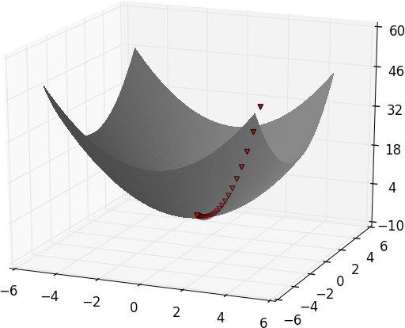

如果一个函数有一个全局最小点，那么这个方法很可能会找到它。如果这个函数有多个（局部）最小点，那么这种方法可能找不到这个点，但你可以通过多尝试一些初始点来重复运行这个方法。如果一个函数没有最小点，也许计算会陷入死循环。
如果一个函数有一个全局最小点，那么这个方法很可能会找到它。如果这个函数有多个（局部）最小点，那么这种方法可能找不到这个点，但你可以通过多尝试一些初始点来重复运行这个方法。如果一个函数没有最小点，也许计算会陷入死循环。8.1 梯度下降的思想
假设我们拥有某个函数 f ，这个函数输入一个实数向量，输出一个实数。一个简单的例子如下：
def sum_of_squares(v):
"""computes the sum of squared elements in v"""
return sum(v_i ** 2 for v_i in v)
我们常常需要最大化（或最小化）这个函数。这意味着我们需要找出能计算出最大（或最小）可能值的输入 v 。
对我们的函数来说，梯度 （在微积分里，这表示偏导数向量）给出了输入值的方向，在这个方向上，函数增长得最快。（如果记不起微积分，用我提到的关键词上网查查。）
相应地，最大化函数的算法首先从一个随机初始点开始，计算梯度，在梯度方向（这是使函数增长最快的一个方向）上跨越一小步，再从一个新的初始点开始重复这个过程。同样，你也可以在相反 方向上逐步最小化函数，如图 8-1 所示。

图 8-1：用梯度下降法计算最小点